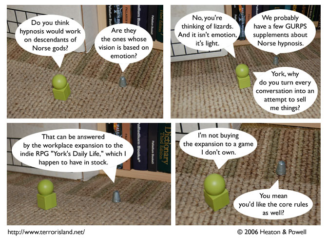

Strip #48
— Monday, October 2, 2006
As a sales associate, York’s extension is a mapping from customer utterances to sales-oriented segues.
Notes, Thoughts, &c.
Ben’s Notes
Basically, this year’s Yom Kippur installment of Terror Island is an opportunity to poke a little light-hearted fun at GURPS. Did you know that the popular mad-science webcomic “Casey and Andy” has its own GURPS sourcebook?
Lewis’s Notes
I agree!